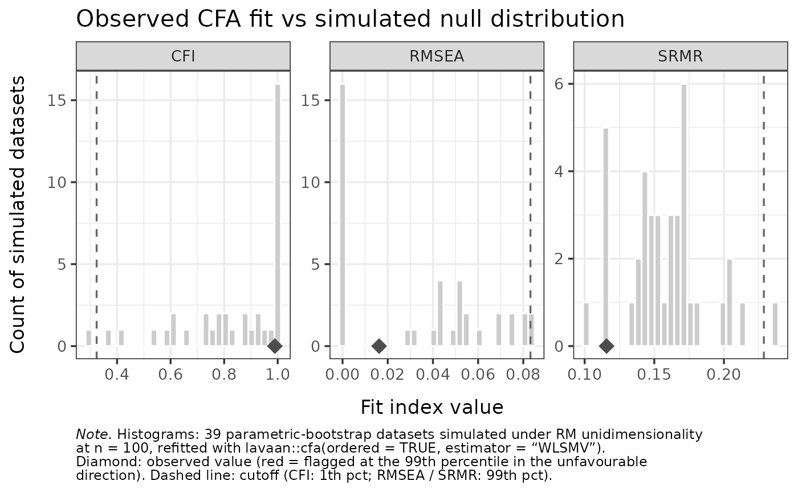

Simulated null distribution for one-factor CFA fit and loadings under PCM unidimensionality
Source:R/cfa_cutoff.R
RMdimCFACutoff.RdGenerates a parametric-bootstrap null distribution against which observed
one-factor categorical-CFA results can be compared. The simulation draws
iterations datasets from the fitted PCM (or RM, for dichotomous
data) using the observed item parameters and a resampled person
distribution; each simulated dataset is fitted with
lavaan::cfa(..., ordered = TRUE, estimator = "WLSMV") and both the
three fit indices (CFI, RMSEA, SRMR) and the per-item standardized factor
loadings are recorded. Because the simulated data satisfy the PCM
unidimensional assumption by construction, the resulting distributions are
the "expected" reference for what a correctly fitting unidimensional model
produces at this sample size and item structure.
Usage
RMdimCFACutoff(
data,
iterations = 250L,
percentile = 99,
output = c("list", "kable"),
parallel = TRUE,
n_cores = NULL,
verbose = FALSE,
seed = NULL,
estimator = "WLSMV"
)Arguments
- data
A data.frame or matrix of item responses (non-negative integers, 0-based). One column per item, one row per person.
- iterations
Integer. Number of parametric-bootstrap iterations. Default
250.- percentile
Numeric in (50, 100). The strictness of the cutoffs. Default
99. Fit indices use a one-sided cutoff in the unfavourable direction (CFI from below; RMSEA and SRMR from above); standardized loadings use a two-sided central interval coveringpercentile% of the simulated distribution (an item is flagged when its observed loading falls in the outer100 - percentile%, split across the two tails).- output
Character. Only
"list"(the default) is supported and the function always returns the simulation object."kable"is retained only to raise an informative error: tables now come fromRMdimCFA.- parallel
Logical. If
TRUE(default), uses parallel processing viamirai. Falls back to sequential ifmiraiis not installed orn_corescannot be resolved.- n_cores
Integer or
NULL. Number of parallel workers. WhenNULL,getOption("mc.cores")is consulted; if neither is set, sequential is used.- verbose
Logical. Show a progress bar (default
FALSE).- seed
Integer or
NULL. Master seed for reproducibility.- estimator
Character. The lavaan estimator passed to
lavaan::cfa(). Default"WLSMV". Other limited-information estimators that produce robust/scaled fit indices (e.g.,"DWLS","ULSMV") are also accepted; full-information ML is rejected (incompatible withordered = TRUE).
Value
A list (the simulation object), with components:
simulateddata.frame with one row per successful iteration and columns
iteration,cfi,rmsea,srmr.simulated_loadingsdata.frame with one row per successful iteration: an
iterationcolumn followed by one column per item holding the simulated standardized loading.percentileNumeric: the strictness setting used.
cutoffsNamed numeric vector (
cfi,rmsea,srmr) of one-sided fit-index cutoffs at the chosen percentile.loading_cutoffsdata.frame
Item,low,high— the two-sided expected loading interval per item.actual_iterationsNumber of successful MC iterations.
sample_nNumber of complete cases used.
sample_n_totalNumber of respondents in the raw input data, before the complete-case filter.
sample_has_naLogical. Whether the raw input data contained any missing values.
n_itemsNumber of items.
item_namesCharacter vector of item names.
is_polytomousLogical: was a PCM (vs RM) fitted?
estimatorThe lavaan estimator used.
Details
This function only generates the simulated reference. To obtain the
observed-vs-expected tables, pass its result to RMdimCFA; for
the figures, pass it to RMdimCFAPlot.
Generative model. The data-generating process for each simulated dataset is the PCM (or RM) fitted to the observed data, with persons drawn from the empirical theta distribution (resampled with replacement). This means the simulated data perfectly satisfy the PCM unidimensional assumption.
Estimation model. The CFA on each simulated dataset uses a
single-factor model with all items as ordinal indicators
(F1 =~ I1 + I2 + ...), fitted with WLSMV by default. Reported
CFI / RMSEA are the Satorra-Bentler-scaled variants (cfi.scaled,
rmsea.scaled) for consistency across iterations; SRMR is reported
unchanged. Standardized loadings are the est.std of the =~ paths
from lavaan::standardizedSolution().
Why a null distribution. A perfectly PCM-unidimensional dataset will typically not yield CFA fit indices at their ideal values (CFI = 1, RMSEA = 0), nor identical loadings across items: PCM uses a logistic threshold structure while WLSMV uses a probit link via the polychoric correlation matrix, and finite samples add sampling variability. The simulated distributions capture both, giving a more honest reference than rule-of-thumb cutoffs derived under continuous-data ML.
Iteration failures. Some simulated datasets cause WLSMV to
fail (non-positive-definite polychoric matrix, boundary thresholds,
empty categories). Failed iterations are dropped; actual_iterations
reflects the number that succeeded.
References
Yuan, K.-H., & Bentler, P. M. (2000). Three likelihood-based methods for mean and covariance structure analysis with nonnormal missing data. Sociological Methodology, 30(1), 165-200. doi:10.1111/0081-1750.00078
Rosseel, Y. (2012). lavaan: An R Package for Structural Equation Modeling. Journal of Statistical Software, 48(2), 1-36. doi:10.18637/jss.v048.i02
Examples
# \donttest{
if (requireNamespace("lavaan", quietly = TRUE) &&
requireNamespace("eRm", quietly = TRUE)) {
data("raschdat1", package = "eRm")
# Few iterations for a fast example; use 250+ in real analyses
sim <- RMdimCFACutoff(raschdat1[, 1:8], iterations = 50,
parallel = FALSE, seed = 1)
# Observed-vs-expected tables
RMdimCFA(raschdat1[, 1:8], cutoff = sim)
if (requireNamespace("ggplot2", quietly = TRUE)) {
plots <- RMdimCFAPlot(sim, data = raschdat1[, 1:8])
plots$loadings
plots$fit
}
}

# }